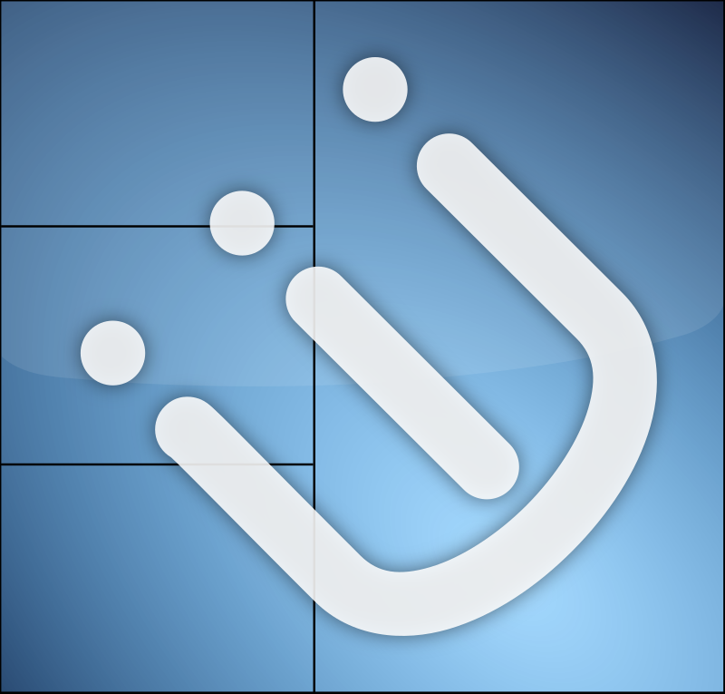
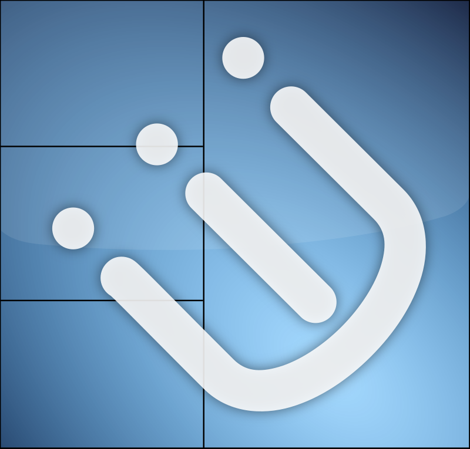

Cellular automaton engine


Dans le cadre de mon apprentissage personnel du langage Python et de la bibliothèque Pygame, j'ai réalisé ce moteur du jeu de la vie.
Il s'agit d'un programme entièrement écrit en python permettant de simuler un automate cellulaire, incluant le jeu de la vie, mais sans y être limité".
Un automate cellulaire est un ensemble de cellules qui évoluent génération après génération sur une grille selon certaines règles.
Il faut donc recalculer l'état de chaque cellule pour chaque génération.
Le programme permer entre autre de:
- Choisir un set de règles
- Créer un set de règles
- Modifier manuellement l'état de chaque cellules
Lors de ce projet, j'ai prinipcalement aquis des compétences techniques, commen une meilleure maitrise du langage Python, et un apprentissage de la bibliothèque Pygame. C'est aussi un des premier programmes de taille conséquente que j'ai concu, ce qui m'a obligé à adopter des bonnes pratiques de programmation, tel que commenter le code et respecter les PEP (Python Enhancement Proposals).
Enfin, j'ai apprécié ce projet principalement pour le fait de coder sans connaissance avancée de la bibliothèque, ce qui m'a obligé à me documenter pour réaliser ce programme.


 
